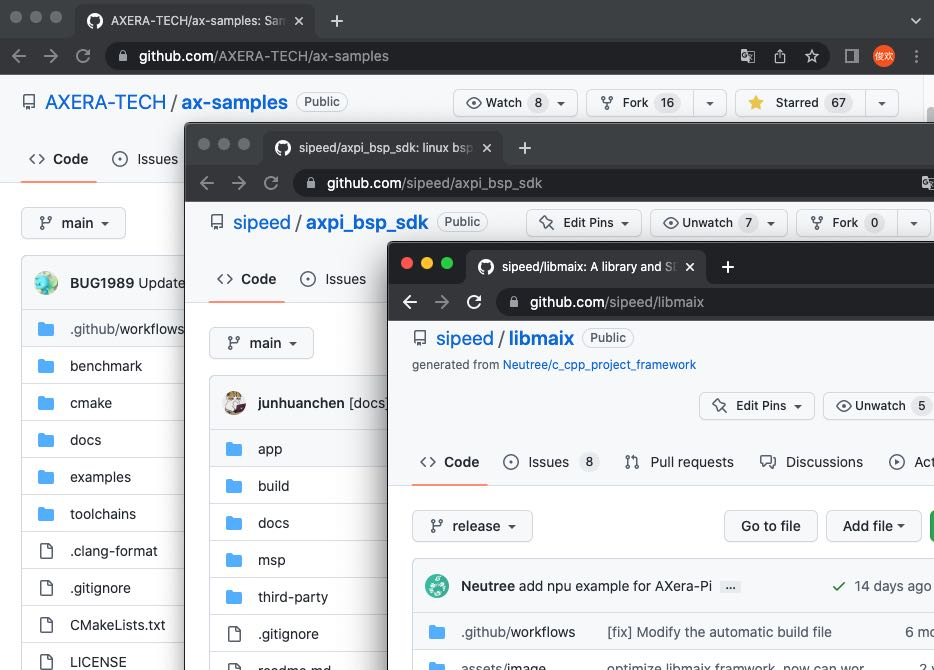

中文
中文AXera-Pi 上手指南
更新历史
| 日期 | 版本 | 作者 | 更新内容 |
|---|---|---|---|
| 2022-11-25 | v0.4 | lyx |
|
上手指南
为了让小伙伴们轻松、快速、平稳地把产品用起来，我们准备了新手初学者上手指南：
Linux 系统简介
AXera-Pi 默认板卡没有存储介质，因此需要准备一张系统卡来启动设备。
目前 AXera-Pi 提供的是 Debian11 Bullseye 镜像，Ubuntu 源自 Debian，这意味着 Ubuntu 使用与 Debian 相同的 apt 打包系统，并共享来自 Debian 存储库的大量软件包和库，利用 Debian 基础设施作为基础。 大多数“派生” Linux 发行版，它们使用相同的包管理系统并与基于的发行版共享软件包。
官方淘宝店 可以购买预烧录系统镜像的 SD 卡，否则就需要自己进行以下的操作来准备 SD 镜像卡。
选择 SD 卡
已在官方购买镜像卡的同学跳过这一步骤，直接在设备插入 TF 卡 点击查看 启动 Linux 系统。
为了方便用户有更多的选择，我们对部分 SD 卡在 AXera-Pi 板子上进行了读写测速。

因为部分 SD 卡是后面陆续才进行测试，没有一一单独拍照但可以根据型号辨认。
| 序号 | 型号 | 写入速度（写入量 160MB） |
读取速度（读取量 160MB） |
|---|---|---|---|
| 1. | Netac 朗科 A2 P500-超高速-64GB 存储卡 | 2.04697 s, 80.0 MB/s | 1.8759 s, 87.3 MB/s |
| 2. | 三星 microSDXC UHS-I 128G 存储卡（蓝卡） | 2.53387 s, 64.7 MB/s | 1.99882 s, 82.0 MB/s |
| 3. | EAGET TF 卡（T1 系列）64G 存储卡 | 6.56955 s, 24.9 MB/s | 7.13792 s, 23.0 MB/s |
| 4. | 京东 高性能 microSDXC UHS-I 128G 存储卡 | 2.28133 s, 71.8 MB/s | 1.92001 s, 85.3 MB/s |
| 5. | KIOXIA microSDXC UHS-I 32G 存储卡 | 6.71284 s, 24.4 MB/s | 2.36794 s, 69.2 MB/s |
| 6. | Netac 朗科 A1 32GB 存储卡 | 4.31411 s, 38.0 MB/s | 2.00759 s, 81.6 MB/s |
| 7. | BanQ JOY card 白金 64G 存储卡 | 9.08105 s, 18.0 MB/s | 9.02843 s, 18.1 MB/s |
| 8. | 海康威视 HS -TF- P2 64G 存储卡 | 2.28079 s, 71.8 MB/s | 1.87698 s, 87.3 MB/s |
下面为没有拍照但是测速过的卡：
| 序号 | 型号 | 写入速度（写入量 160MB） |
读取速度（读取量 160MB） |
|---|---|---|---|
| 1. | 雷克沙（Lexar）64GB TF（MicroSD）存储卡 C10 U3 V30 A2 | 2.59644 s, 63.1 MB/s | 1.9106 s, 85.8 MB/s |
| 2. | 雷克沙（Lexar）128GB TF（MicroSD）存储卡 C10 U3 V30 | 6.73793 s, 24.3 MB/s | 6.94079 s, 23.6 MB/s |
烧录 Linux 系统

因为开发板上的 EMMC 仅默认预留焊盘，所以需要从 TF 卡启动 Linux Debian 系统。
如何获取镜像？
因为镜像文件比较大，因此仅提供百度云下载链接。
前往百度云点击进入下载页面，输入提取码 sdls 即可下载文件，镜像包与校验文件都已经放在里面了。
其中拓展名为 img.xz 的是压缩文件，我们就是需要烧录这个文件，拓展名是 img.xz.md5sum 的是校验文件，可以用来校压缩文件的完整性。
镜像压缩文件命名的组成为：镜像提供方 _ 适用芯片 _ Linux 发行版 _ 镜像时间 + img.xz
校验文件需要在 Linux 环境中使用，windows10 及以上的用户可以使用 wsl 来提供 Linux 环境
使用命令为在镜像文件和校验文件共同存在的目录使用 md5sum -c *.md5sum*，就可以来查看完整性了。
| 校验成功 | 校验失败 |
|---|---|
可以看到校验失败的话会消失 FAILED。当然通常不需要进行校验，这里只是给有需要的人提前预留一下。
如何烧录镜像？
烧录前我们需要进行以下准备：
- 一张容量大于 8G 的 SD 卡；建议购买官方镜像卡，不然可能会因为 SD 卡质量差而带来糟糕的体验
- 一个读卡器：建议使用支持 USB3.0 的读卡器，不然会因为读卡器的速度过低会使烧录时间过长
- Etcher软件：根据自身电脑下载对应版本的软件即可
镜像系统烧录方法：
首先运行 Etcher 软件，点击 Flash from file 选中已经下载好的 img.xz 文件镜像，然后点击 Select target 选中 SD 卡，最后点击 Flash 进行烧录等待完成即可。
烧录镜像文件到 SD 卡：

| 烧录中 | 烧录完成 |
|---|---|
 |
 |
需要注意的是在烧录完成后显示的应该是 Flash Complete!，并且显示的是 Successful 。
进行完上述操作后，电脑可能会提示需要格式化 U 盘，这个时候我们直接忽略这个提示（因为在 Etcher 软件里面已经烧录完成且 Successful 了），将内存卡取下，准备安装到板子上准备使用。
烧录问题
1. 使用 Etcher 选择镜像的后出现错误
可以重新运行 Etcher 来解决该软件由于缓存等问题而造成的加载错误
2. 结束烧录后提示的是 Failed
重新一次烧录内存卡镜像
3. 格式化后内存卡可用容量很小
这种情况使用对于 Windows 和 MacOS 可以使用 SD Card Formatter来格式化 SD 卡，Linux 系统可以使用系统的 disk 工具或 Gparted来格式化。
启动 Linux 系统
完成上面的烧录镜像卡后，接着接可以组装板子了。
如何连接外设和配件？
购买全功能套餐的同学们可以跳过此装配步骤。
接线前我们需要进行准备工作：
- 一块 AXera-Pi 开发板
- 一个 USB3.0 （或者两个 USB2.0）的电脑接口来连接板子
- 一张已经烧录适用于 m3axpi 的系统镜像的 SD 卡
- GC4653 Sensor 普通版摄像头 或者 OS04a10 Sensor 夜视版摄像头
- 配套的 5 寸 MIPI 屏

可参考以下示例避免误接：
将屏幕（排线反面朝上）接入底板背面 LCD 接口，组装好后翻正板子在右侧的卡槽处插入烧录好的镜像卡。
摄像头接线认准以下注意点：
因物料更换摄像头现有两种版本，
V3753版本的摄像头接线座子以及线序进行了更改，如若接反后上电的话底板的 LED 灯会不亮，接反时间久会导致烧坏板卡或摄像头，请根据以下注意点正确接入摄像头。
进行接线前确保摄像头底部的小人与板子丝印同向再进行接线，如下图所示。
接线时确保底板接口座子与摄像头座子的线序 1 在同一侧，认准排线正面蓝色线序接入即可。

如何启动 AXera-Pi ？
因物料更换屏幕现有不同的版本，需区别版本以及使用屏幕时出现锯齿等画面请移步到 Maix-III 系列 AXera-Pi 常见问题(FAQ) 查询。
如果 PC 支持 USB3.0
- 用 type-c 接入
USB-UART，串口方式登录开发板 - 或者接
USB-OTG， ssh 方式登录开发板
如果 PC 只支持 USB2.0
- 需要两个 USB2.0 端口、两根 type-c，同时连接
USB-UART和USB-OTG，否则电流不足无法开机
在 20221013 后设备通电开机会从耳机播放音乐和点亮出厂的 5 寸屏幕，并在串口输出如下的 debian11 系统启动日志（截取部分日志如下）.有些同学会遇到 Ubuntu22.04 CH340 系列串口驱动（没有 ttyUSB）问题，点此查看解决方案。
登录到板子里
当 AXera-Pi 出现上述 logo 画面后代表开机成功，这时我们把板子当做一台 Linux 服务器来对待。

通过「系统登录方式」快速帮助用户了解如何登录到设备里的 Linux 系统，用户可以选择 USB-UART 串口 或 USB-OTG SSH 登录，可点击「系统使用手册-登录方式」前往查看，以下文 USB-OTG 口的 usb0 网卡（192.168.233.1）作为 ssh 登录的 ip 进入板子为例。
juwan@juwan-n85-dls:$ sshpass -p root ssh root@192.168.233.1
Linux AXERA 4.19.125 #53 SMP PREEMPT Tue Sep 13 13:16:27 HKT 2022 armv7l
The programs included with the Debian GNU/Linux system are free software;
the exact distribution terms for each program are described in the
individual files in /usr/share/doc/*/copyright.
Debian GNU/Linux comes with ABSOLUTELY NO WARRANTY, to the extent
permitted by applicable law.
Last login: Wed Oct 12 16:43:43 2022 from 192.168.233.10
root@AXERA:~# screenfetch
_,met$$$$$gg. root@AXERA
,g$$$$$$$$$$$$$$$P. OS: Debian
,g$$P"" """Y$$.". Kernel: armv7l Linux 4.19.125
,$$P' `$$$. Uptime: 2d 3h 5m
',$$P ,ggs. `$$b: Packages: 785
`d$$' ,$P"' . $$$ Shell: bash 5.1.4
$$P d$' , $$P Disk: 2.6G / 3.6G (77%)
$$: $$. - ,d$$' CPU: ARMv7 rev 5 (v7l) @ 4x 1.248GHz
$$\; Y$b._ _,d$P' RAM: 88MiB / 744MiB
Y$$. `.`"Y$$$$P"'
`$$b "-.__
`Y$$
`Y$$.
`$$b.
`Y$$b.
`"Y$b._
`""""
root@AXERA:~# ax_clk
AX620A:
DDR: 3733 MHz
CPU: 800 MHz
BUS of VPU: 624 MHz
BUS of NPU: 624 MHz
BUS of ISP: 624 MHz
BUS of CPU: 624 MHz
NPU OTHER: 800 MHz
NPU GLB: 24 MHz
NPU FAB: 800 MHz
NPU CORE1: 800 MHz
NPU CORE0: 800 MHz
ISP: 533 MHz
MM: 594 MHz
VPU: 624 MHz
root@AXERA:~#
学会使用板子

由于默认没有配置桌面环境（只显示 logo），所以我们需要将 AXera-Pi 连接一台电脑，通过终端管理软件（shell）与它进行命令行交互，这些可以在「系统使用手册-验证外设」学会板上所有验证过的系统调频、外设、驱动、应用等资源的用法，像一些 Linux 操作基础、如何控制 I2C / UART / SPI 这些硬件设备的操作，还可以在「系统使用手册-内置 AI 应用」里调用内置的开箱 AI 应用及例程，快去用起来吧！

试试 Python 编程（适用初学者）
基于这篇上手指引的一路走下来的学习，相信小伙伴们也基本对 AXera-Pi 基础使用以及验证外设有一定的掌握了，那我们就踏入编程的世界，一起来试试 Python 编程吧！
我们内置了以 jupyter notebook/ax-pipline-api/pinpong 等 Python 包，你可以在「试试 Python 编程」里获得如何在 AXera-Pi 上进入 Python 模式启动 jupyter notebook 并使用运行 AI 模型。
以及如何连接 Arduino UNO 以及 Microbit 进行 Python 编程的效果如下图。

准备 C/C++ 编程（适用开发者）
能走到这里就说明板子已经用起来了，那就来开发吧！在这之前需要「准备 C/C++ 编程」了解如何拷贝文件到板子里，如何搭建本地编译或交叉编译，然后学习到如何基于现有的代码进行开发。
快速了解现在提供哪些开源代码仓库以及用法，这些开源仓库会持续更新和开放的。

训练模型部署
初学者训练模型可以从 AI 开发指南 学习如何训练一个最简单的模型到量化转换部署测试。
更专业更深入的调优需要了解 Pulsar ，这是由「爱芯元智」自主研发的 all-in-one 神经网络编译器，充分发挥片上异构计算单元(CPU+NPU)算力， Pulsar 工具链核心功能是将 .onnx 模型编译成芯片能解析并运行的 （.joint） 模型。
目前有以下几种部署方式（Pipeline）推荐：
libmaix：并不在意程序的性能和效率，用最快的方式把摄像头图像输入 AI 模型后输出识别结果绘制到显示到屏幕上验证一下识别效果。
ax-pipeline：没有多余的封装，直接操作芯片核心资源 vin \ ivps \ npu \ vo 等硬解设备进行部署开发，可以使模型部署达到一个非常好的效果。
IPCDemo：以效果最好、性能最好、占用最少、稳定可靠、功能最多、确保最终能部署到用户的现场不出问题的框架代码来开发 AI 程序。
libmaix 部署
在板子上编译这个示例代码 axpi_classification_cam，然后放入模型运行后即可看到效果，截止 20221013 前代码还没有优化所以性能不高只够看个结果，想要效果和性能可以看 ax-pipeline 部署。
即可验证效果：详细可从 maixhub 上获取。
ax-pipeline 部署
以上的部署方式都出于快速验证或应用落地的角度进行的，还有一套基于 bsp sdk 的 ax-pipeline 部署方式，它面向既了解 AI 又知道芯片底层 Linux 开发方法的同学，目前内置应用中提供了板子的 rtsp 和屏幕双推流 yolov5 实时识别以及新增 yolov5s-seg 实例分割的程序就是来自于它。

IPCDemo 部署
这是一个典型的 IPC 演示程序，源码在这里 axpi_bsp_sdk IPCDemo ，其中 IPCDemo 的功能模块有：
- ISP：负责从 Sensor 获取图像 RAW 数据并转为 YUV，最终分 3 路通道输出以上信息。
- IVPS：图像视频处理模块。实现对视频图形进行一分多、Resize、Crop、旋转等功能。
- VENC / JENC：视频/JPEG 编码输出。
- Detect：支持人脸或结构化检测。
- Web 显示：实现 H264 流的 Web 传输和提供 Web 方式查看实时视频。
- RTSP 推流：实现 H264 流的 RTSP 封装以及传输。
- 录像 TF 卡存储：封装 H264 流为 MP4 格式文件并保存至 TF 卡或者 FLASH 空间。
以下视频中的 IPCDemo 程序使用方法请点击内置开箱应用查看。